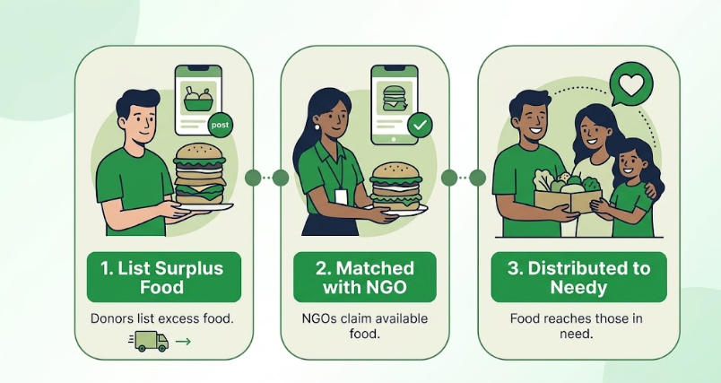

Food Saver makes it easy to connect surplus food with people who need it. Our simple process helps donors, NGOs, and volunteers work together to reduce food waste and fight hunger.
Explore the Process
Our simple process connects food donors, NGOs, and volunteers to make sure surplus food reaches people who need it.
Donors add details about their available surplus food through the Food Saver platform.
The food information is checked and verified before it becomes available for NGOs.
Nearby NGOs can view available food and send a request to receive the donation.
Volunteers help collect and deliver the food safely to people in need.
Every donation can make a meaningful difference in someone’s life.